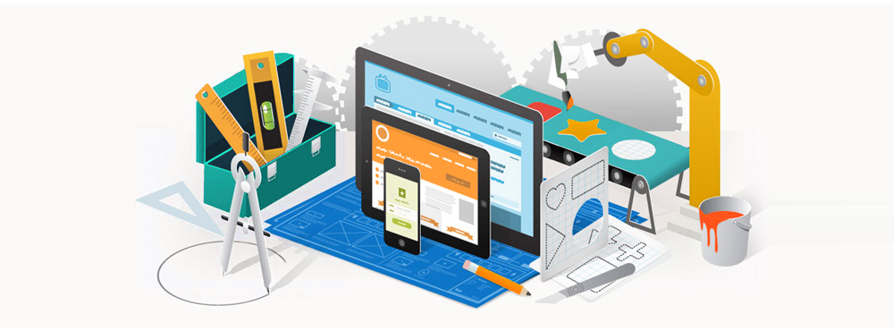

Про наші курси

Інтерфейси можуть радувати, а можуть завдавати болю.
Інтернет переповнений красивими інтерфейсами, якими неможливо користуватися. Вони збирають лайки в колах поціновувачів і болять тим, хто з ними взаємодіє насправді.
Хороший інтерфейс добре виглядає. Але головне - їм зручно користуватися. Там все на своїх місцях, там відчувається турбота про користувача, про його завдання.
Ми створили захоплюючий базовий курс UX Design. Основи для того, щоб в світі стало більше зручних інтерфейсів.
Для того, щоб ви дізналися і полюбили своїх користувачів. Для того, щоб ви навчилися визначати їх завдання і маршрути і стелить їм соломки. Для того, щоб ви навчилися довіряти собі, але перевіряти свої рішення тестуванням .